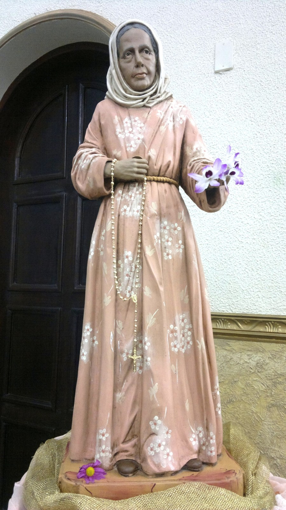
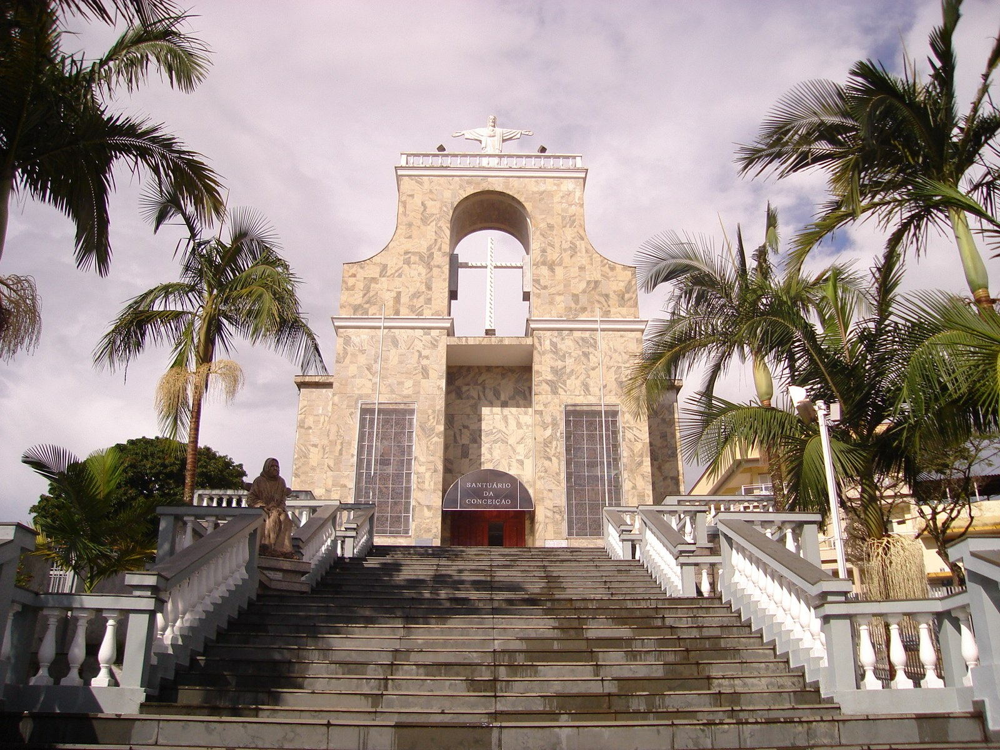
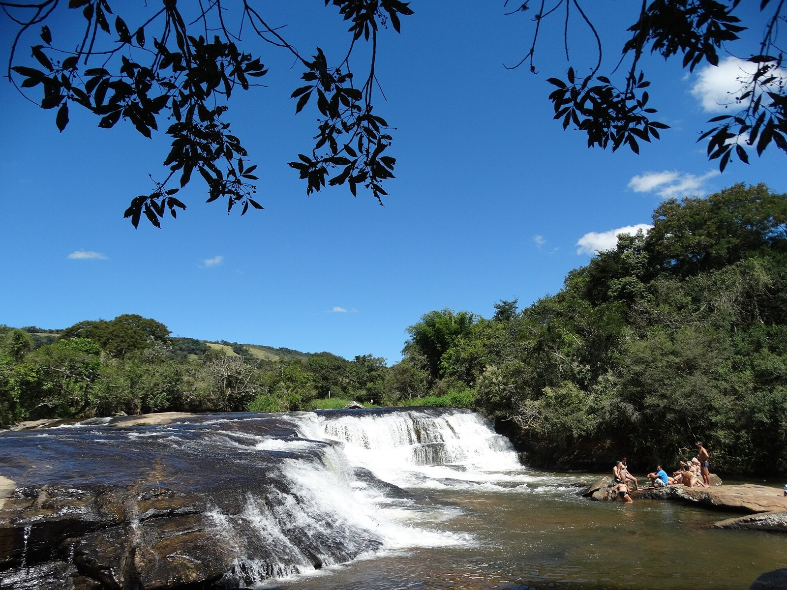
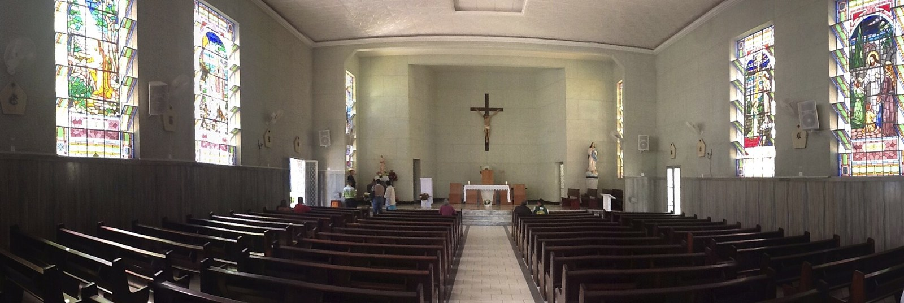
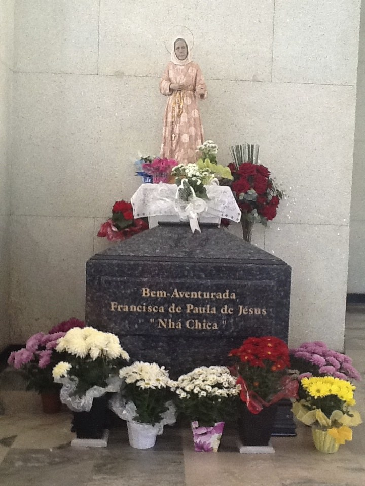

Diovanimangia · Wikimedia Commons · CC BY-SA 3.0Nhá Chica: o coração fechado sem cirurgia
Reconhecido pela Santa Igreja CatólicaO RELATO
Francisca de Paula de Jesus nasceu em São João del-Rei, Minas Gerais, por volta de 1810, filha de uma mulher escravizada, Isabel Maria. Foi batizada em 26 de abril de 1810. Aos oito anos mudou-se com a mãe e o irmão, Teotônio Pereira do Amaral, para Baependi; ficou órfã de mãe aos dez. Viveu reclusa, em oração, e recebia em casa pobres e ricos que buscavam conselho, sem cobrar nada. Apresentava os pedidos a Nossa Senhora da Conceição, a quem chamava de Minha Sinhá. O povo a chamava de a santa de Baependi, ou simplesmente Nhá Chica.
Com a morte do irmão, em 1861, herdou uma fortuna. Usou-a para construir, em 1865, uma capela a Nossa Senhora da Conceição, e doou o restante aos pobres. Morreu em 14 de junho de 1895, com cerca de 85 anos, e foi sepultada em 18 de junho dentro da capela. O templo, demolido em 1940 e reconstruído no mesmo lugar, é hoje o Santuário Nossa Senhora da Conceição, onde estão seus restos mortais.
A causa começou quase um século depois da morte. A Congregação das Causas dos Santos deu o nihil obstat em 17 de janeiro de 1992. O inquérito diocesano sobre a vida e as virtudes correu na Diocese da Campanha entre 1993 e 1995; os atos foram validados em 12 de maio de 1999. Em 14 de janeiro de 2011, Bento XVI autorizou o decreto das virtudes heroicas, que a declarou Venerável.
O milagre apresentado para a beatificação aconteceu em 1995, em Caxambu, cidade vizinha a Baependi. Ana Lúcia Meirelles Leite, professora aposentada, sofreu uma isquemia ocular em julho daquele ano. Os médicos descobriram um defeito congênito grave no coração: uma abertura pela qual o sangue passava por caminhos errados, com hipertensão pulmonar e fadiga. Em Varginha, Belo Horizonte e São Paulo, ouviu a mesma indicação: cirurgia imediata. Ela pediu a intercessão de Nhá Chica. Três dias antes da data marcada, teve febre alta e a operação foi adiada. Seis meses depois, voltou aos médicos. Um exame que costumava durar 40 minutos levou duas horas: a abertura havia se fechado. O médico disse que a medicina e a ciência não explicavam o que houve. O problema não voltou.
Em 1998, a Diocese da Campanha instruiu o inquérito sobre a cura. Em 14 de outubro de 2011, a Consulta Médica da Congregação votou por unanimidade: os sete médicos declararam a cura sem explicação científica. Teólogos reconheceram o nexo em 18 de fevereiro de 2012; cardeais e bispos, em 5 de junho. Em 28 de junho de 2012, Bento XVI recebeu o cardeal Angelo Amato, prefeito da Congregação, e autorizou o decreto sobre o milagre atribuído à intercessão da Venerável Francisca de Paula de Jesus, chamada Nhá Chica, leiga.
A beatificação foi celebrada em Baependi em 4 de maio de 2013, presidida pelo cardeal Amato como enviado do papa Francisco. A carta apostólica da mesma data autoriza o título de Beata e fixa a festa em 14 de junho. No Regina Caeli do dia seguinte, Francisco a lembrou como a mãe dos pobres. Para a canonização, a Santa Igreja Católica exige o reconhecimento de um segundo milagre.
O QUE A SANTA IGREJA CATÓLICA DECIDIU
Decreto sobre o milagre autorizado por Bento XVI em 28 de junho de 2012, em audiência ao cardeal Angelo Amato, prefeito da Congregação das Causas dos Santos. Beatificação em Baependi em 4 de maio de 2013, presidida pelo cardeal Amato em nome do papa Francisco; carta apostólica de 4 de maio de 2013 fixa a festa em 14 de junho. Decreto das virtudes heroicas: 14 de janeiro de 2011.
FOTOS













Imagens do Wikimedia Commons, em domínio público ou Creative Commons, com crédito ao autor.
VÍDEOS
 ▶Igreja no Brasil celebra os 10 anos da Beatificação de Nhá ChicaTV Aparecida · YouTube
▶Igreja no Brasil celebra os 10 anos da Beatificação de Nhá ChicaTV Aparecida · YouTube ▶Legado de fé e caridade de Nhá Chica emociona fiéis em Baependi, Minas Gerais – JCTV – 22/01/26REDEVIDA Informação · YouTube
▶Legado de fé e caridade de Nhá Chica emociona fiéis em Baependi, Minas Gerais – JCTV – 22/01/26REDEVIDA Informação · YouTubeVídeos públicos do YouTube, de canais de terceiros. Abrem no YouTube.
COMO VISITAR
Santuário Nossa Senhora da Conceição (Igreja de Nhá Chica)
Baependi, Minas Gerais
FONTES
- Sala de Imprensa da Santa Sé — Promulgação de decretos da Congregação das Causas dos Santos, 28 jun 2012
- Vatican.va — Carta apostólica de beatificação de Francisca de Paula de Jesus (Nhá Chica), 4 mai 2013; Regina Caeli de Francisco, 5 mai 2013
- Instituto Nhá Chica (nhachica.org.br) — A Cura
- Canção Nova — Conheça o milagre que levou Nhá Chica à beatificação, 29 abr 2013
VER O POST NO INSTAGRAMTODOS OS MILAGRES NO MAPA